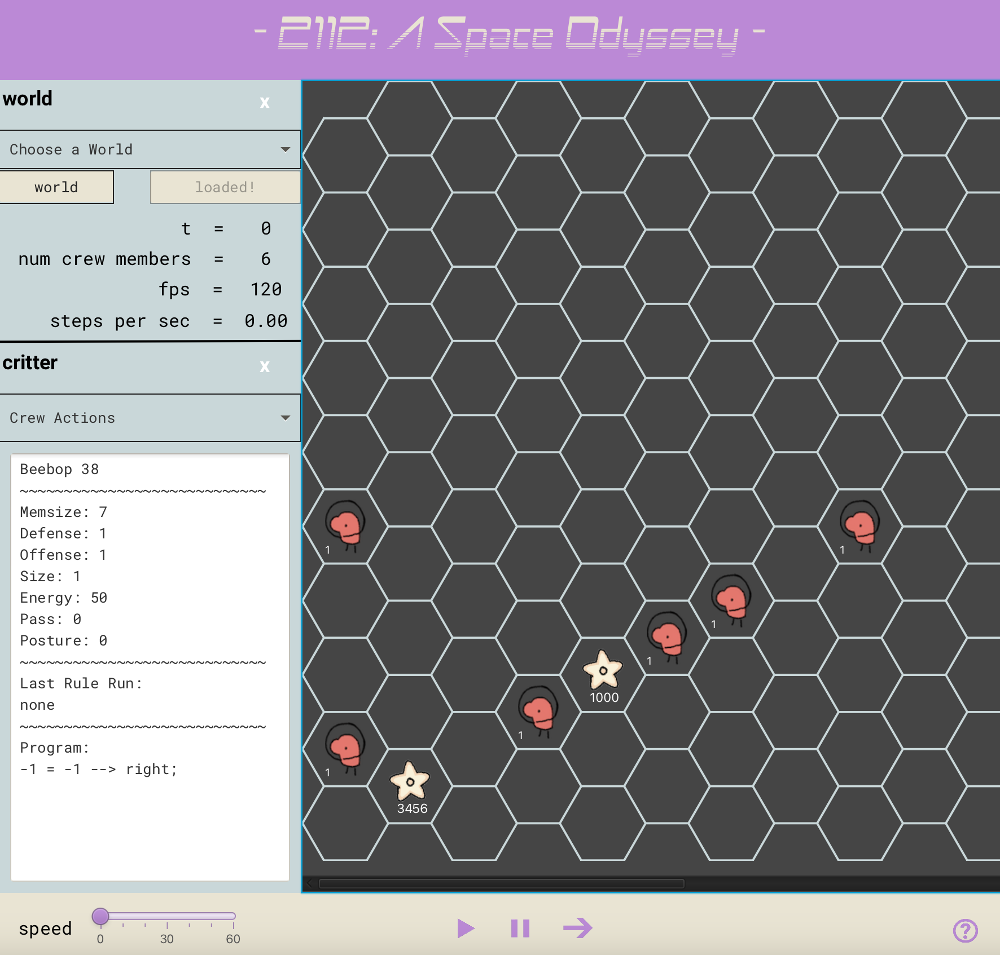
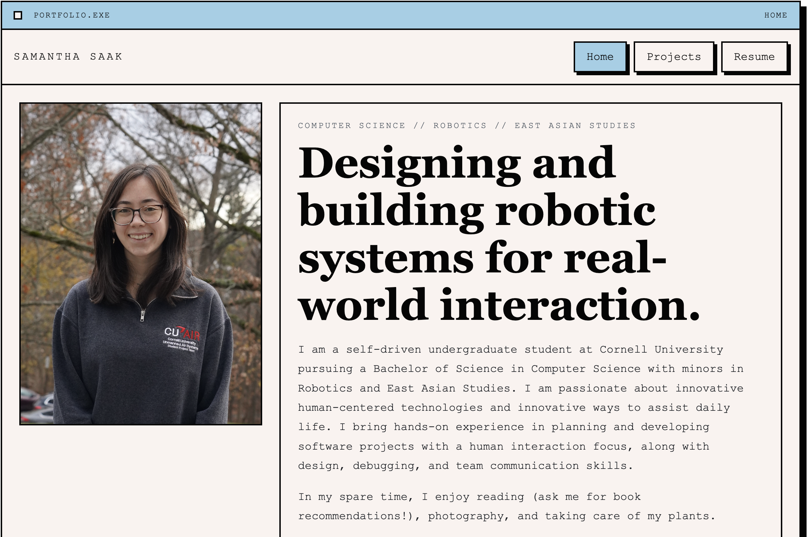
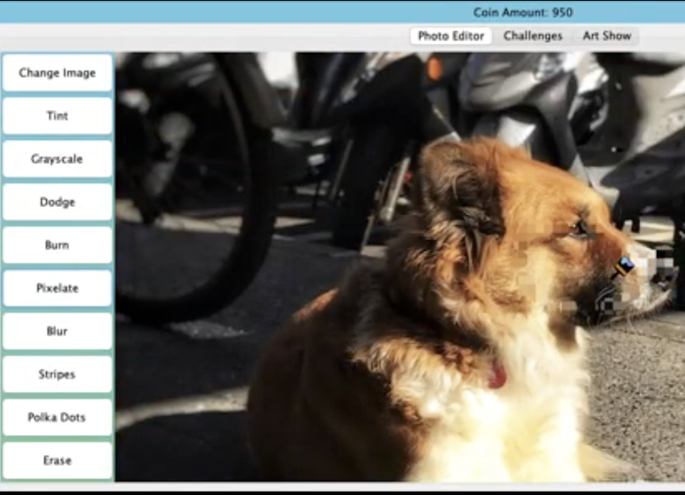

TACTIC
Placeholder description for TACTIC. Replace this with a short, concrete summary of the problem, your technical role, and the robotics or systems contribution that made the project stand out.
Placeholder description for TACTIC. Replace this with a short, concrete summary of the problem, your technical role, and the robotics or systems contribution that made the project stand out.

Placeholder description for WAMP. Replace this with a concise overview of the system, what you built, and the engineering challenges or results you want viewers to remember.

I developed a novel Amazon Alexa interface with a mobile-manipulator robot for increased accessibility in human-robot interactions. My project presents a case study for using virtual assistants as accessible user interfaces for home assistance robots. It demonstrates how Amazon Alexa can be used as a voice interface for a robot to perform command grouping tasks based on user input. The project utilizes the Alexa Skills Kit to process Alexa interactions, ROS to communicate with the robot, and Flask to develop the web interface. My work was accepted for presentation at the New England Robotics Colloquium for Fall 2024.

Placeholder description for Autopilot. Replace this with a focused summary covering the autonomy stack, your role, and the core sensing, controls, or planning ideas behind it.

I worked in a group of four to develop a simulator for evolving artificial life. I developed a backend parser to handle custom language programs and a graphical user interface that enables users to take control of individual specimens as they move, eat, reproduce, and evolve. I worked mainly on the backend data structures for parsing and interpreting the custom language program, the efficiency of the GUI and user interactions, and the overall organization of my team.

As the lead engineer for my FIRST Robotics Competition team, I coordinated efforts across the mechanical, electrical, and software subteams, contributing to the full robot development. Hardware wise, I designed a shooting mechanism and oversaw electrical wiring of the robot. In my software work, I utilized an existing program to calculate time-optimal trajectories, considering robot movement and pose constraints, and developed a robust autonomous scheduler. The scheduler coordinated the robot's arm movements, intake system, and shooting mechanism, automatically generating the necessary movements for any path with the ability to adjust to dynamic conditions.

Created as a way to display my projects, this website is an ongoing project.

I created a photo editor game in Java where users can edit their photographs with classic photo editing tools, such as tint or pixelate, and then sell their work in an auction-style game.